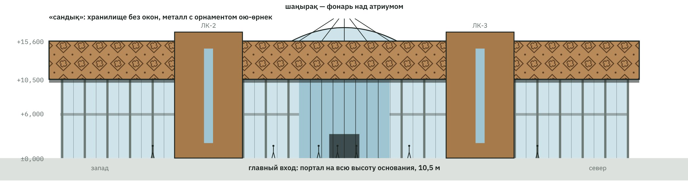
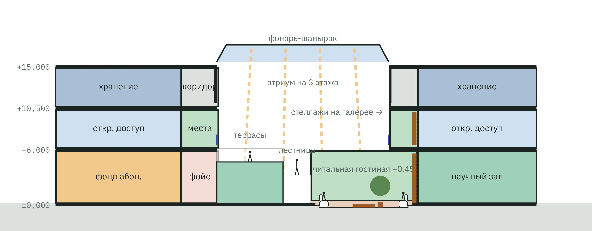
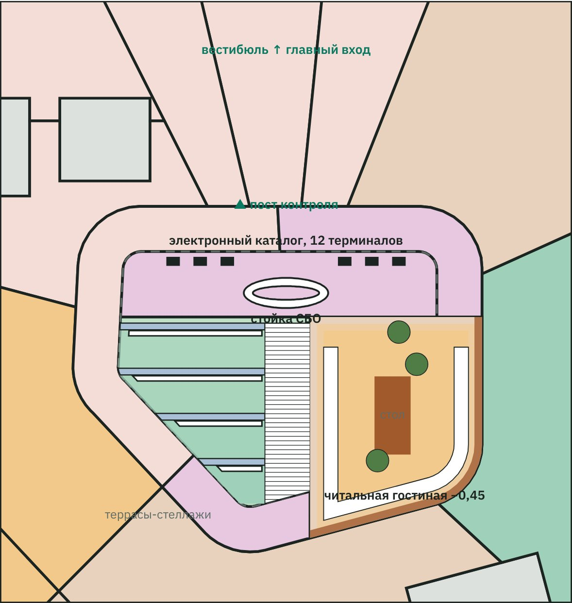
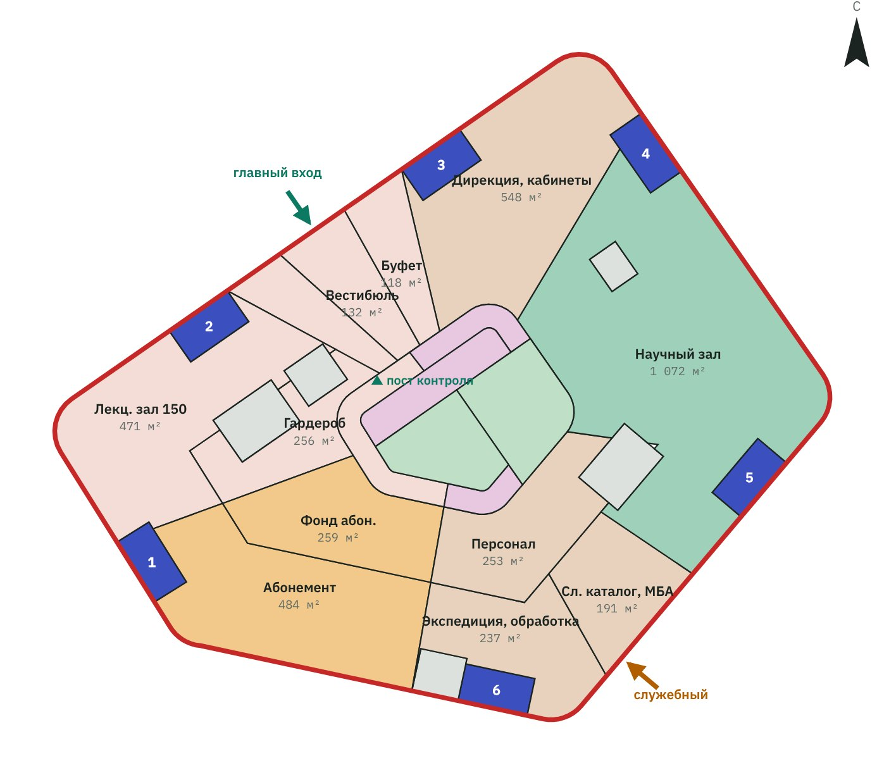
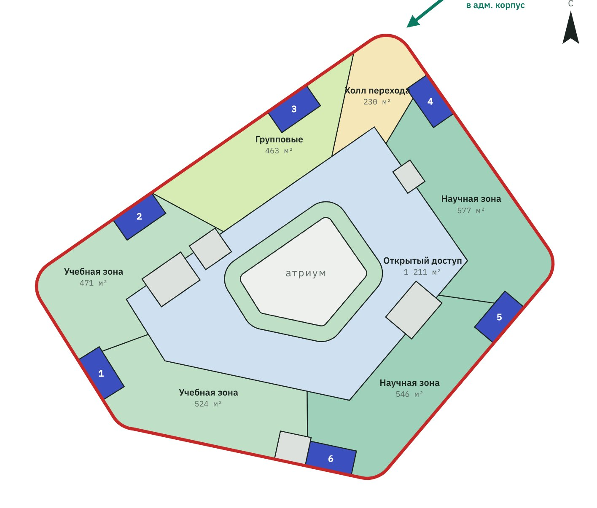
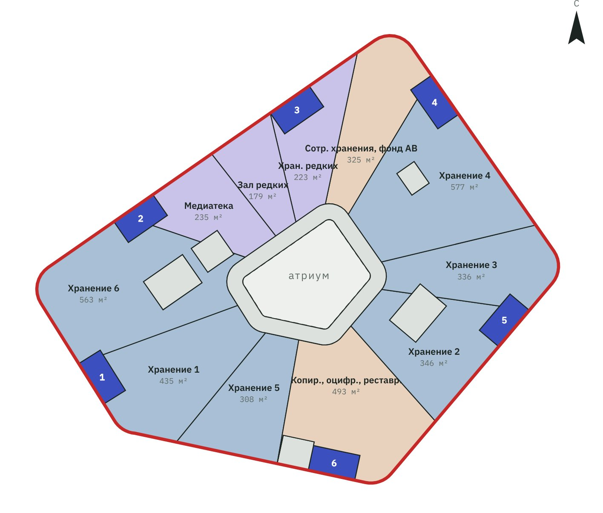

A four-storey university library that I zoned together with a team of AI agents. I set the brief, the building codes and every design decision. The agents drafted the plans, counted the areas and checked my work.
The program put all book storage on a windowless third floor. Instead of hiding that, I made it the theme of the building. On top sits a sandyq, the Kazakh chest for valuables, clad in metal with the oyu-örnek ornament. Below it is a transparent glass base. Light comes through a shanyraq skylight down an atrium that cuts through all three floors.

A closed storage volume on mobile shelving. No windows, metal cladding with relief ornament, lit at night.
Floors 1–2, 10.5 m of glass. The chest cantilevers over a full-height entrance portal.
A 300 m² atrium through three floors under a skylight shaped like the yurt's crown.
Four 1.5 m terraces with shelving walls climb from the lobby to the open-plan second floor.
Sunk 0.45 m under the skylight. Soft modules around one big wooden table and trees.





Every zone on these plans has an area and a reason. In the full sheet, hovering a zone shows why it is there and which code or brief item it follows. Reading rooms face north, east and south-east, as the code asks. Each storage compartment stays under 600 m², as fire rules require.
I wrote the brief as a document the AI could follow: building footprint, structural grid, program areas from the design code, and which facade suits which room. When rules conflicted, the agent had to ask me, not guess.
A generator agent turned each scheme into an interactive HTML sheet: plans, sections, area tables. A new idea such as “atrium through three floors” takes minutes to redraw, not days.
Separate agents checked the result without seeing how it was made: program areas, fire safety, accessibility with stairs and lifts, daylight and ceiling heights.
Another agent read the room areas from the Revit model and compared them with the code, including how many people each room holds.
Three rounds of variants, then a new footprint, then three versions of this concept. Each round was driven by a design decision I made after reading the reviews.
Open the full concept sheet (in Russian, with all plans and area tables)